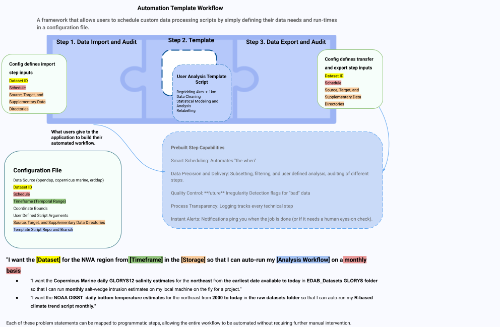

Automation Template
The Automation Template is a Python-based ETL pipeline framework and library designed to automate and audit data imports and analyses for geospatial datasets.
Workflows are defined using a description configuration file and an optional analysis script. The framework runs the pipeline at scheduled intervals while completely auditing both the generated files and their metadata. This ensures raw data is prepped and structured for downstream analyses or report generation, such as the example outlined in the tutorial for the Dissolved Oxygen Heatmap Workflow.
Each workflow is broken down into atomic actions, classified as either:
An Import: Powered by one of the predefined data source modules.
A Templated Script: A user-defined script or application that runs custom analysis and produces a targeted result.
Every detail pertaining to these steps (including the data source, dataset parameters, execution schedule, and storage locations) is managed directly within the configuration file. As a result, this configuration file acts as an operational ledger, establishing clear data provenance for any import or processing steps executed by the Automation Template.

Steps to Automating a Workflow as an End User
Scope Your Project for Automation - Collect necessary information for the configuration guide including storage locations for imports, data sources, and workflow steps.
Follow the installation guide for the Automation Template and Automation Template R Environment (optional) to your local machine.
Script Preparation (Optional) – Ensure your script follows the template script requirements to ensure your script can be run with the Automation Template.
Define the Workflow – Write the configuration file defining your workflow using the Config Template using information obtained in step 3.
Submit Workflow for Run – Use your configuration file to automate a workflow run.
Run Workflow – Follow the Run Commands to run the workflow in your environment of choice.